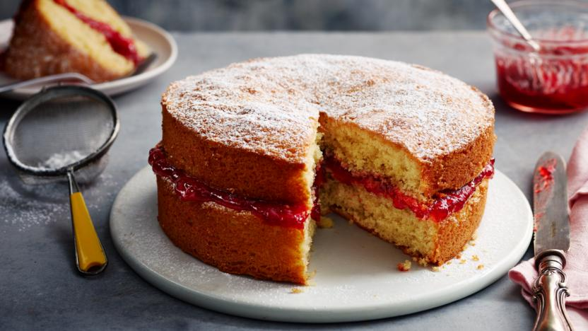

Banana Banana Bread

Description
Victoria sponge cake recipe is a baking classic and a tasty tea-time treat.
Each serving provides 501 kcal, 5g protein, 50g carbohydrates (of which 36g sugars), 31g fat (of which 19g
saturates), 0.8g fibre and 0.8g salt (serving with 300g of jam and 300ml cream).
Ingredients
- 4 free-range eggs
- 225g/8oz caster sugar, plus a little extra for dusting the finished cake
- 225g/8oz self-raising flour
- 2 tsp baking powder
- 225g/8oz baking spread at room temperature, plus a little extra to grease the tins
- good-quality strawberry or raspberry jam
- whipped double cream (optional)
Steps
- Preheat the oven to 180C/160C Fan/Gas 4. Grease and line two 20cm/8in sandwich tins.
- Break the eggs into a large mixing bowl, then add the sugar, flour, baking powder and butter.
- Mix together until well combined with an electric hand mixer (or a wooden spoon), being careful not to over
mix. Place a damp cloth under the bowl to keep it steady. The mixture should fall off a spoon easily.
- Divide the mixture evenly between the tins. Use a spatula to scrape all the mixture from the bowl and gently
smooth the surface.
- Bake the cakes on the middle shelf of the oven for 25 minutes, checking after 20 minutes. The cakes are
ready when golden-brown, coming away from the edges, and springy to the touch.
- Set aside to cool in their tins for 5 minutes. Run a palette or rounded butter knife around the inside
edges, then carefully turn the cakes out onto a cooling rack.
- To assemble the cake, place one cake upside down on a plate and spread it with plenty of jam. Add whipped
cream if desired.
- Top with the second cake, top-side up, and sprinkle over the caster sugar.
Go Back to Home